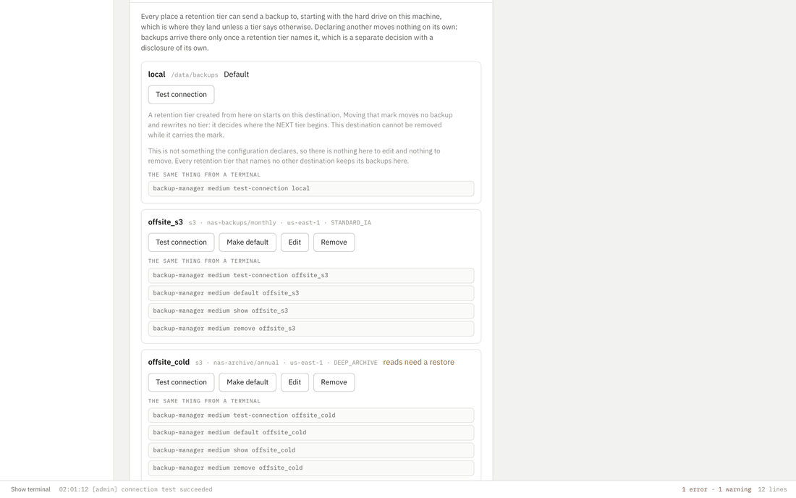
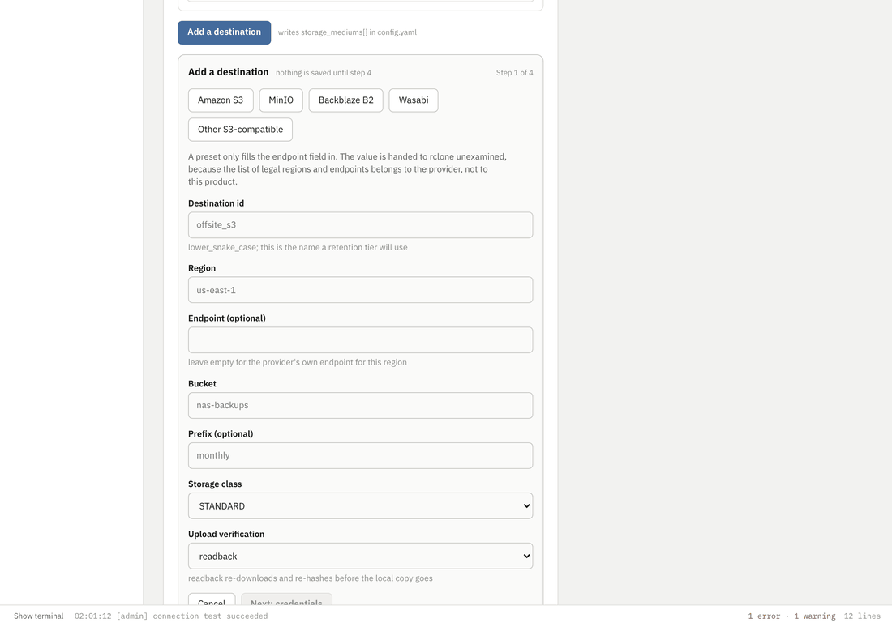
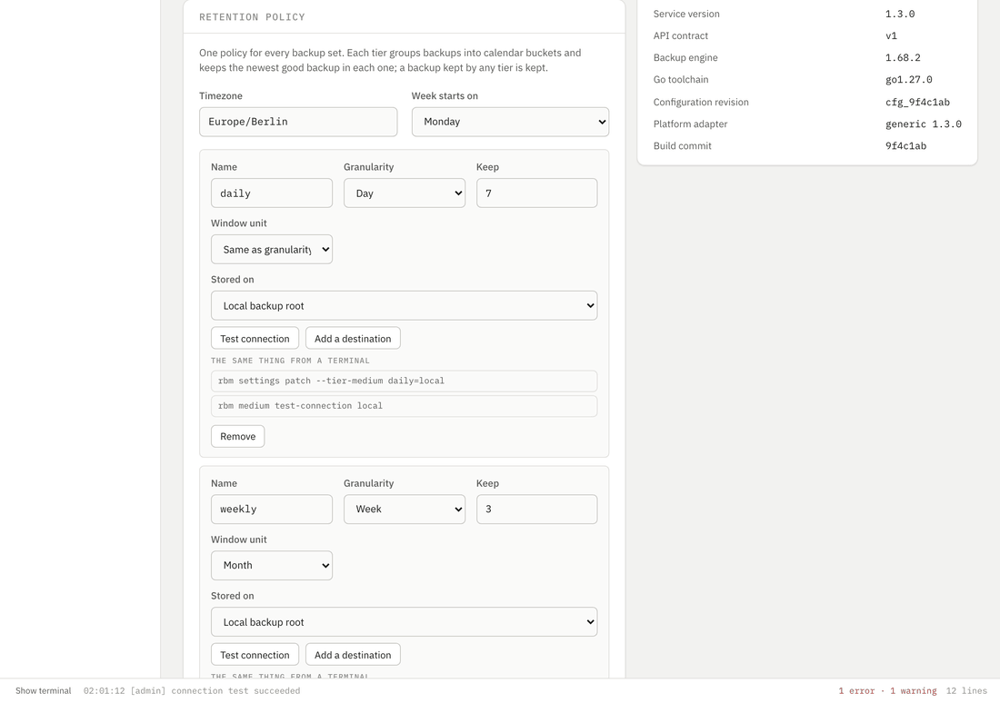

Where backups go
A backup lands on the hard drive of the machine running this, unless a retention tier says otherwise. That sentence was true before 0.3.3 and there was nowhere in the interface it was written down: the settings page listed the destinations the configuration declared, which meant the one place every backup actually goes was the one place never named. An operator reading that list could reasonably conclude their backups were going nowhere.
#622 put the drive in the list and gave every retention tier a picker. #636 closed the other half: a destination cannot be written into the configuration until something has proven it answers.
Declaring a destination moves nothing. Backups arrive on it only once a retention tier names it, and naming it is a separate act with a disclosure of its own. That separation is the point: declaring a bucket is cheap and reversible, and sending copies of your backups to a third party is neither.
The drive on this machine
It is first in the list, it carries the default mark, and the card says what that mark does and does not mean. Moving it moves no backup and rewrites no tier: it decides where the next tier created from here starts. It cannot be removed while it holds the mark, and it has nothing to edit, because it is not something the configuration declares. It answers a test connection like any other destination.

The development fixture answers the local drive's connection test with the bucket-shaped report it gives an S3 destination, so the detail column says the endpoint "holds bucket" and then names an empty one, and the storage class comes out blank. The engine's own local report is a different set of steps. Nothing on this page is claiming otherwise and I have reported it.
Declaring another one
Four steps, and the fourth is the one that matters. The wizard writes nothing into the configuration until the check in step three comes back clean, which is #636. The check is not a ping: it obtains the credential, reaches the endpoint, decides whether the storage class can be read on demand, writes a real object, reads it back byte for byte, confirms the class it was stored as, verifies the content, and deletes the probe. Eight named steps in a fixed order, and every one of them is drawn, including the ones that were skipped.
Skipped is drawn as skipped and never as a quiet pass, and that rule has an argument behind it worth repeating: a surface that renders a skipped write as anything but "this was never tried" has told an operator their bucket is writable on the strength of a credential that was never obtained.

What reaches the configuration file
A reference, in all four cases. There is no field in config.yaml a secret fits in and there never will be. Pasting a key writes it to a 0600 file beside the configuration and keeps only the id, which is exactly what importing an SSH private key already did. The other three name something that already exists: a credentials file rclone opens itself, so the secret never enters this process at all; an environment variable read at connection time; or an argv array run directly and never through a shell, which is how a secrets manager gets adopted without this product taking a dependency on one.
That is also why every command line printed under these controls is copy-pasteable exactly as shown with nothing starred out. There is no flag on this surface that takes a secret, so there is nothing to redact.
A retention tier picks where its copies go
Every tier in the chain has a destination picker, in both places a chain is edited: the deployment's own policy on the settings page, and one backup set's override on its detail page. They are the same editor, because a second tier editor is a second set of rules about what a tier may be and those two would drift.
The command under the picker is recomputed as the value changes. That is the parity rule working live rather than as a caption: what is printed is what the form would send, built by the same function whichever surface asks for it.

A remote backup artifact is not deleted until a verified and durably committed NAS copy exists. Sending a tier's copies somewhere else does not weaken that: a placement that could not be confirmed is reported as unreachable, which means "this deployment cannot confirm or deny the copy", and emphatically not "the copy is gone". Nothing is pruned on the strength of it and no source copy is reclaimed because of it.
The same things from a terminal
Every control above prints its own equivalent, so this table is a summary rather than the source of truth. The CLI is rbm as of 0.3.3, which retires the old name rather than aliasing it.
| Command | What it does |
|---|---|
rbm medium list | every storage destination this deployment declares, the drive on this machine included, with the default marked |
rbm medium show <id> | one destination, plus what the journal says is currently on it |
rbm medium add <id> --bucket B | declare one. Verified before it is written, and refused when it cannot be |
rbm medium add <id> ... --no-verify | write it anyway, saying in so many words that nothing was proven |
rbm medium edit <id> | replace a destination's description; a flag left off keeps what is there |
rbm medium remove <id> | un-declare it. Refused while any copy names it, and the refusal says how many |
rbm medium test-connection <id> | the eight-step check, against a declared destination. medium preflight is the same verb under the name the engine spells it |
rbm medium test-connection --candidate <id> ... | the same check against a destination that does not exist yet, which is what the wizard's step three calls |
rbm medium import-credentials --stdin | read AWS shared-credentials text from standard input and store it, printing back only the id |
rbm medium default <id> | move the mark that decides where a newly created tier starts |
rbm settings patch --tier-medium NAME=ID | bind one retention tier to a destination, with --acknowledge-medium-disclosure where the disclosure applies |
rbm retention --tier ... | preview retention decisions, including where each kept copy is expected to live |
rbm retention apply <source/set> --acknowledge | carry out a previewed plan. The destructive one, and it says so |
The commands page has the rest of the surface, and the note about how the name changed.